국제통계지표
G20 국가별 표기G20국가는 유럽연합 의장국(매변 변경)을 제외한 19개국 표기

한국G20
| 지표명 | 수치 | 단위 | 연도 |
|---|---|---|---|
| 1인당 국민총소득(1인당 국민총소득(당해년가격)) | 35,990 | 달러 | 2022 |
| 경제성장률(경제성장률(기준년가격 GDP)) | 2.6 | % | 2022 |
| 고용률(고용률) | 68.51 | % | 2022 |
| 국가경쟁력 순위(순위) | 28 | 순위 | 2022 |
| 국민총생산(GDP)(국내총생산(당해년가격)) | 1,673.26 | 10억 US$ | 2022 |
| 무역의존도(수입) | 43.71 | % | 2022 |
| 무역의존도(수출) | 40.85 | % | 2022 |
| 비교물가수준(비교물가수준(한국기준)) | 100 | 한국=100 | 2022 |
| 외환보유액(금제외) | 418,368.91 | 100만 달러 기말 | 2022 |
| 외환보유액(외환보유액) | 423,163.66 | 100만 달러 기말 | 2022 |
| 정부 부채(일반정부 총부채 비율(GDP 대비)) | 51.5 | % | 2022 |
| 평균근로자 세금(노동비용 대비) | 24.19 | % | 2022 |
국가데이터처(국제기구) 지표 상세보기
※ 정확한 지표는 본사이트의 원본데이터를 확인바랍니다.